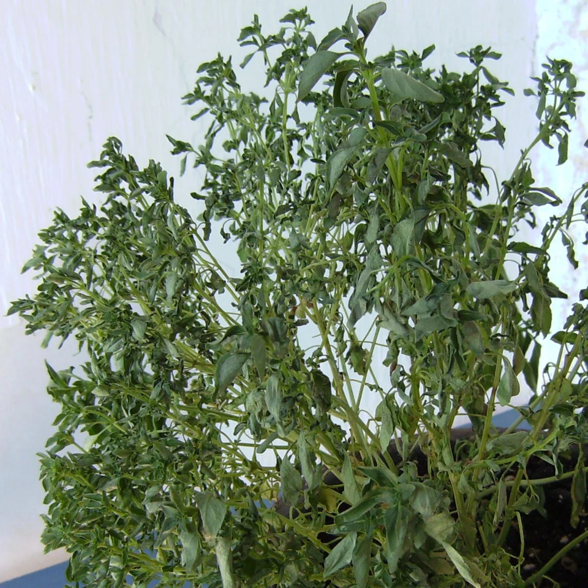

Leaves and shoots losing firmness
The basil leaves hang with their tips pointed down while many stems still stand. Wilt can affect soft leaf blades and their stalks before the whole shoot collapses. Check the root zone before deciding whether the plant needs water.

Inspect the specimen
Choose a drooping leaf and follow its stalk back to the shoot. Look for a limp blade with little resistance, then compare it with a leaf on a firmer branch. A crisp, brown tip is already dry tissue and cannot tell you whether the rest of the shoot is wilting.
Check similar symptoms
Note which branches droop and when it starts. A plant that sags in afternoon heat and recovers as temperatures fall follows a different course from one that remains limp the next morning. If the change began just after a move outdoors, record sun and wind exposure as well.
Choose a response
Check moisture below the surface, near the active roots. If the potting mix is dry throughout, water gradually until it is evenly moist and let excess drain. If it is already wet, empty any standing water and inspect the stem base and roots for soft, decaying tissue.
Track the next change
Mark one shoot and photograph it from the side before watering or moving the pot. Recheck that shoot after the hottest part of the day and the following morning. Note whether its leaf stalks lift again or whether additional shoots have begun to droop.
When potted basil still droops after watering
In the photographer’s original sequence this basil regained firmness after irrigation. In your own pot, check whether water runs straight down a gap between the pot and dry mix. If so, the surface can look freshly watered while the center of the root ball remains dry.
Check whether one shoot or the whole plant wilts
Trace a limp shoot back to its first firm junction. A kink, tie or break at that point can interrupt one branch even when the root ball is moist. If several unrelated shoots wilt together, check moisture through the full root depth before adding more water.